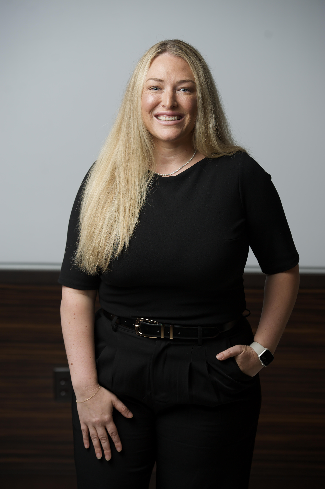

About
Growing firms rarely suffer from a lack of ideas. They struggle to execute the ones they already have.
My career has been built inside operations: helping organizations turn growth, complexity and competing priorities into clear systems, accountable leadership and measurable execution.
I work across the parts of a business that have to function together: people, finance, technology, processes, leadership, client experience and performance. I have led operational work in complex, multi-location law-firm environments and understand what happens when a firm grows faster than its operating structure.
Best Fractional COO was created for owners who need experienced operational leadership but don't necessarily need a full-time COO. I step in, understand the firm, identify what's getting in the way, and work alongside leadership to build and execute the solution.

How I work
An operator at the table, not a coach on the sidelines.
Operational leadership, not generic business coaching.
Not a report that gets put on a shelf.
Priorities, accountability, KPIs, leadership rhythms, processes and systems.
Diagnose the problem, build the solution, stay long enough for it to stick.
Experience
Track record
Placeholders for the mockup. Each block will be filled with a verified figure before launch.